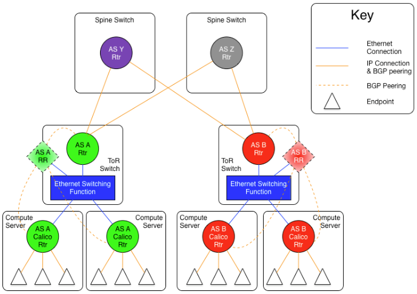
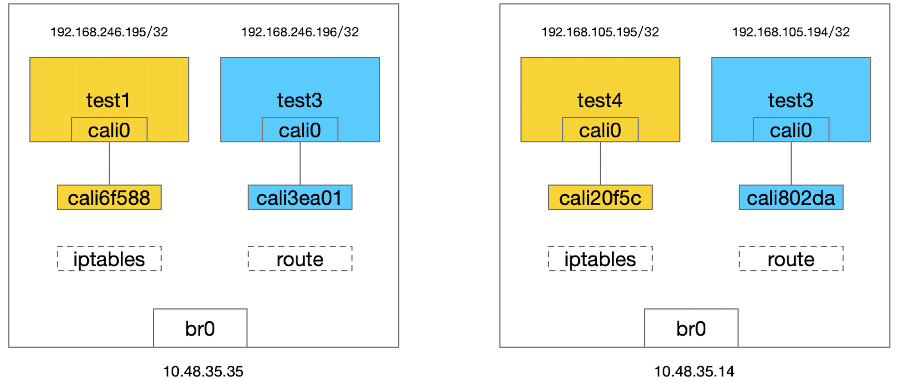
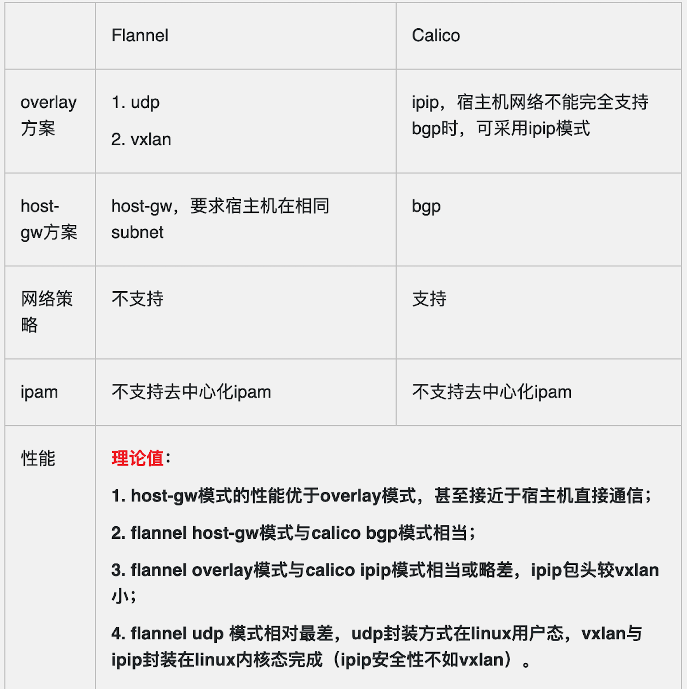

calico
calico是一个比较有趣的虚拟网络解决方案，适用于容器的解决方案，完全利用路由规则实现动态组网，通过BGP协议通告路由。
calico的好处是endpoints组成的网络是单纯的三层网络，报文的流向完全通过路由规则控制，没有overlay等额外开销。
calico的endpoint可以漂移，并且实现了acl。
calico的缺点是路由的数目与容器数目相同，非常容易超过路由器、三层交换、甚至node的处理能力，从而限制了整个网络的扩张。
calico的每个node上会设置大量（海量)的iptables规则、路由，运维、排障难度大。
calico的原理决定了它不可能支持VPC，容器只能从calico设置的网段中获取ip。
calico目前的实现没有流量控制的功能，会出现少数容器抢占node多数带宽的情况。
calico的网络规模受到BGP网络规模的限制。
名词解释
- endpoint: 接入到calico网络中的网卡称为endpoint
- AS: 网络自治系统，通过BGP协议与其它AS网络交换路由信息
- ibgp: AS内部的BGP Speaker，与同一个AS内部的ibgp、ebgp交换路由信息。
- ebgp: AS边界的BGP Speaker，与同一个AS内部的ibgp、其它AS的ebgp交换路由信息。
- workloadEndpoint: 虚拟机、容器使用的endpoint
- hostEndpoints: 物理机(node)的地址
calico在ip fabric中的部署方式
如果底层的网络是ip fabric的方式，三层网络是可靠的，只需要部署一套calico。
剩下的关键点就是怎样设计BGP网络，calico over ip fabrics中给出两种设计方式:
- AS per rack: 每个rack(机架)组成一个AS，每个rack的TOR交换机与核心交换机组成一个AS
- AS per server: 每个node做为一个AS，TOR交换机组成一个transit AS
这两种方式采用的是Use of BGP for routing in large-scale data centers中的建议。
AS per rack
- 一个机架作为一个AS，分配一个AS号，node是ibgp，TOR交换机是ebgp
- node只与TOR交换机建立BGP连接，TOR交换机与机架上的所有node建立BGP连接
- 所有TOR交换机之间以node-to-node mesh方式建立BGP连接
TOR三层联通：

每个机架上node的数目是有限的，BGP压力转移到了TOR交换机。当机架数很多，TOR交换机组成BGP mesh压力会过大。
endpoints之间的通信过程:
EndpointA发出报文 --> nodeA找到了下一跳地址nodeB --> 报文送到TOR交换机A --> 报文送到核心交换机
|
v
EndpointB收到了报文 <-- nodeB收到了报文 <-- TOR交换机B收到了报文 <-- 核心交换机将报文送达TOR交换机B
优化：“Downward Default model”减少需要记录的路由
Downward Default Model在上面的几种组网方式的基础上，优化了路由的管理。
在上面的方式中，每个node、每个TOR交换机、每个核心交换机都需要记录全网路由。
“Downward Default model”模式中:
- 每个node向上(TOR)通告所有路由信息，而TOR向下(node)只通告一条默认路由
- 每个TOR向上(核心交换机)通告所有路由，核心交换机向下(TOR)只通告一条默认路由
- node只知晓本地的路由
- TOR只知道接入到自己的所有node上的路由
- 核心交换机知晓所有的路由
这种模式减少了TOR交换机和node上的路由数量，但缺点是，发送到无效IP的流量必须到达核心交换机以后，才能被确定为无效。
endpoints之间的通信过程:
EndpointA发出报文 --> nodeA默认路由到TOR交换机A --> TOR交换机A默认路由到核心交换机 --+
|
v
EndpointB收到了报文 <-- nodeB收到了报文 <-- TOR交换机B收到了报文 <-- 核心交换机找到了下一跳地址nodeB
calico验证
etcd
在节点上执行
docker run -d -p 2379:2379 -p 2380:2380 --name calico_etcd elcolio/etcd \
-name etcd1 \
-advertise-client-urls http://10.48.35.14:2379 \
-listen-client-urls http://0.0.0.0:2379 \
-initial-advertise-peer-urls http://10.48.35.14:2380 \
-listen-peer-urls http://0.0.0.0:2380 \
-initial-cluster-token etcd-cluster \
-initial-cluster "etcd1=http://10.48.35.14:2380" \
-initial-cluster-state new
查看集群状态
# curl 10.48.35.14:2379/version
etcd 2.0.10
设置多个节点共用相同的store
vim /etc/docker/daemon.json
{
"cluster-store":"etcd://10.48.35.14:2379",
}
重启docker服务
systemctl restart docker
sudo service docker restart
etcd保存的calico信息
$ sudo etcdctl ls /calico
/calico/v1
/calico/bgp
/calico/ipam
$ curl http://127.0.0.1:2379/v2/keys/
{"action":"get","node":{"dir":true,"nodes":[{"key":"/docker","dir":true,"modifiedIndex":3,"createdIndex":3},{"key":"/calico","dir":true,"modifiedIndex":7,"createdIndex":7}]}}
$ curl 10.48.35.14:2379/v2/keys/calico/bgp/v1/host/k8s-/ip_addr_v4 | python -m json.tool
% Total % Received % Xferd Average Speed Time Time Time Current
Dload Upload Total Spent Left Speed
100 156 100 156 0 0 119k 0 --:--:-- --:--:-- --:--:-- 152k
{
"action": "get",
"node": {
"createdIndex": 74,
"key": "/calico/bgp/v1/host/k8s-/ip_addr_v4",
"modifiedIndex": 74,
"value": "10.48.35.14"
}
}
$ sudo etcdctl get /calico/bgp/v1/host/k8s-/ip_addr_v4
10.48.35.14
calico安装
直接下载预编译好的可执行文件就可以直接使用了
sudo wget -O /bin/calicoctl https://github.com/projectcalico/calicoctl/releases/download/v1.6.1/calicoctl
sudo chmod +x /bin/calicoctl
curl -O -L https://github.com/projectcalico/calicoctl/releases/download/v3.1.5/calicoctl
chmod +x calicoctl
mv calicoctl /user/local/bin/
下载 calico node 镜像
docker pull calico/node
启动calico服务:
在每台主机上均运行命令：
sudo calicoctl node run --ip=10.48.35.14 --name node01 --node-image quay.io/calico/node:v2.6.0
其中 calicoctl 命令里的 name 和 ip，每台主机均可以根据自身情况来填写。 命令实际使用 calico/node 镜像启动了一个容器，执行输出内容如下：
sudo calicoctl node run --name node01 --ip=10.48.32.5
Running command to load modules: modprobe -a xt_set ip6_tables
Enabling IPv4 forwarding
Enabling IPv6 forwarding
Increasing conntrack limit
Removing old calico-node container (if running).
Running the following command to start calico-node:
docker run --net=host --privileged --name=calico-node -d --restart=always -e IP=10.48.32.5 -e ETCD_ENDPOINTS=http://127.0.0.1:2379 -e NODENAME=node01 -e CALICO_NETWORKING_BACKEND=bird -e CALICO_LIBNETWORK_ENABLED=true -v /var/log/calico:/var/log/calico -v /var/run/calico:/var/run/calico -v /lib/modules:/lib/modules -v /run:/run -v /run/docker/plugins:/run/docker/plugins -v /var/run/docker.sock:/var/run/docker.sock quay.io/calico/node:latest
Image may take a short time to download if it is not available locally.
Container started, checking progress logs.
2019-03-03 05:40:10.424 [INFO][9] startup.go 256: Early log level set to info
2019-03-03 05:40:10.424 [INFO][9] startup.go 272: Using NODENAME environment for node name
2019-03-03 05:40:10.424 [INFO][9] startup.go 284: Determined node name: node01
2019-03-03 05:40:10.425 [INFO][9] startup.go 97: Skipping datastore connection test
2019-03-03 05:40:10.473 [INFO][9] startup.go 367: Building new node resource Name="node01"
2019-03-03 05:40:10.473 [INFO][9] startup.go 382: Initialize BGP data
2019-03-03 05:40:10.473 [INFO][9] startup.go 476: Using IPv4 address from environment: IP=10.48.32.5
2019-03-03 05:40:10.476 [INFO][9] startup.go 509: IPv4 address 10.48.32.5 discovered on interface br0
2019-03-03 05:40:10.476 [INFO][9] startup.go 452: Node IPv4 changed, will check for conflicts
2019-03-03 05:40:10.477 [INFO][9] startup.go 647: No AS number configured on node resource, using global value
2019-03-03 05:40:10.477 [WARNING][9] startup_linux.go 47: Expected /var/lib/calico to be mounted into the container but it wasn't present. Node name may not be detected properly
2019-03-03 05:40:10.493 [INFO][9] startup.go 536: CALICO_IPV4POOL_NAT_OUTGOING is true (defaulted) through environment variable
2019-03-03 05:40:10.493 [INFO][9] startup.go 781: Ensure default IPv4 pool is created. IPIP mode:
2019-03-03 05:40:10.494 [INFO][9] startup.go 791: Created default IPv4 pool (192.168.0.0/16) with NAT outgoing true. IPIP mode:
2019-03-03 05:40:10.495 [INFO][9] startup.go 536: FELIX_IPV6SUPPORT is true (defaulted) through environment variable
2019-03-03 05:40:10.495 [INFO][9] startup_linux.go 79: IPv6 supported on this platform: true
2019-03-03 05:40:10.495 [INFO][9] startup.go 536: CALICO_IPV6POOL_NAT_OUTGOING is false (defaulted) through environment variable
2019-03-03 05:40:10.495 [INFO][9] startup.go 781: Ensure default IPv6 pool is created. IPIP mode: Never
2019-03-03 05:40:10.496 [INFO][9] startup.go 791: Created default IPv6 pool (fdb3:cdc5:a7b8::/48) with NAT outgoing false. IPIP mode: Never
2019-03-03 05:40:10.498 [INFO][9] startup.go 181: Using node name: node01
Starting libnetwork service
Calico node started successfully
calico/node 中的进程
$ sudo docker exec -it calico-node ps aux
PID USER TIME COMMAND
1 root 0:00 /sbin/runsvdir -P /etc/service/enabled
198 root 0:00 runsv bird6
199 root 0:00 runsv confd
200 root 0:00 runsv bird
201 root 0:00 runsv felix
202 root 0:00 runsv libnetwork
203 root 0:00 svlogd /var/log/calico/confd
204 root 0:01 svlogd /var/log/calico/felix
205 root 0:00 svlogd -tt /var/log/calico/bird6
206 root 0:00 svlogd /var/log/calico/libnetwork
207 root 0:00 svlogd -tt /var/log/calico/bird
208 root 0:13 bird6 -R -s /var/run/calico/bird6.ctl -d -c /etc/calico/c
209 root 0:07 confd -confdir=/etc/calico/confd -interval=5 -watch --log
210 root 22:38 calico-felix
211 root 0:13 bird -R -s /var/run/calico/bird.ctl -d -c /etc/calico/con
212 root 0:05 libnetwork-plugin
创建calico网络
先创建两个网络：
# sudo docker network create --driver calico --ipam-driver calico-ipam net1
# sudo docker network create --driver calico --ipam-driver calico-ipam net2
docker 创建网络的时候，会调用 calico 的网络驱动，由驱动完成具体的工作。注意这个网络是跨主机的，因此无论在哪台机器创建，在其他机器上都能看到：
$ sudo docker network ls
NETWORK ID NAME DRIVER SCOPE
0887c53db680 bridge bridge local
2e0533ba7fad host host local
e8a0a439868f net1 calico global
d8af5a88e634 net2 calico global
285e1438e0e7 none null local
创建calico网络的容器
然后分别在网络中运行容器：
node01:
sudo docker run -tid --name=test1 --net=net1 busybox
sudo docker run --net net2 --name test2 -tid busybox
node02:
sudo docker run -tid --name=test3 --net=net2 busybox
sudo docker run --net net1 --name test4 -tid busybox
calico网络连通性
组网的拓扑如图

test1和test4都在net1中，可以连通。通过如下配置test1可以ping通test4。
$ sudo docker exec -it test1 ping 192.168.105.195 -c 3
PING 192.168.105.195 (192.168.105.195): 56 data bytes
64 bytes from 192.168.105.195: seq=0 ttl=62 time=0.229 ms
64 bytes from 192.168.105.195: seq=1 ttl=62 time=0.274 ms
64 bytes from 192.168.105.195: seq=2 ttl=62 time=0.256 ms
--- 192.168.105.195 ping statistics ---
3 packets transmitted, 3 packets received, 0% packet loss
round-trip min/avg/max = 0.229/0.253/0.274 ms
同一个网络 docker 会保存各自的名字和 IP 的对应关系，而不同网络的容器无法解析，而且不能相互通信。 test1与test2在不同的网络中，无法ping通。
$ sudo docker exec -it test1 ping 192.168.246.196 -c 3
PING 192.168.246.196 (192.168.246.196): 56 data bytes
--- 192.168.246.196 ping statistics ---
3 packets transmitted, 0 packets received, 100% packet loss
路由
node1
主机网卡
$ ip addr show
16: cali6f588e66d6f@if15: <BROADCAST,MULTICAST,UP,LOWER_UP> mtu 1500 qdisc noqueue state UP
link/ether 52:f7:01:67:89:90 brd ff:ff:ff:ff:ff:ff link-netnsid 2
18: cali3ea014c6cc8@if17: <BROADCAST,MULTICAST,UP,LOWER_UP> mtu 1500 qdisc noqueue state UP
link/ether 02:2a:51:4f:26:c0 brd ff:ff:ff:ff:ff:ff link-netnsid 1
容器test1 网卡
$ sudo docker exec test1 ip addr show
1: lo: <LOOPBACK,UP,LOWER_UP> mtu 65536 qdisc noqueue qlen 1000
link/loopback 00:00:00:00:00:00 brd 00:00:00:00:00:00
inet 127.0.0.1/8 scope host lo
valid_lft forever preferred_lft forever
inet6 ::1/128 scope host
valid_lft forever preferred_lft forever
15: cali0@if16: <BROADCAST,MULTICAST,UP,LOWER_UP,M-DOWN> mtu 1500 qdisc noqueue
link/ether ee:ee:ee:ee:ee:ee brd ff:ff:ff:ff:ff:ff
inet 192.168.246.195/32 scope global cali0
valid_lft forever preferred_lft forever
inet6 fe80::ecee:eeff:feee:eeee/64 scope link
valid_lft forever preferred_lft forever
- 容器网卡cali0即16号网卡，对接host节点15号网卡；
- 也再次印证容器获取的是/32位主机地址；
- 注意容器网卡的mac地址”ee:ee:ee:ee:ee:ee”, 这是1个固定的特殊地址（所有calico生成的容器mac地址均一样），因为calico只关心三层的ip地址，而不关心二层mac地址
主机路由
$ ip route
default via 10.48.35.1 dev br0
10.48.35.0/24 dev br0 proto kernel scope link src 10.48.35.14
169.254.0.0/16 dev br0 scope link metric 1005
172.17.0.0/16 dev docker0 proto kernel scope link src 172.17.0.1
192.168.105.192/26 via 10.48.35.35 dev br0 proto bird
blackhole 192.168.246.192/26 proto bird
192.168.246.195 dev cali6f588e66d6f scope link
192.168.246.196 dev cali3ea014c6cc8 scope link
calico默认在每个节点上创建一个 26 位掩码的子网，该子网可以有64个IP地址。在本机可以通过calico学习到到其他节点虚拟的路由，在本例中，如图第5条路由。
最后两条路由是到本机容器的路由，发送到对应的网卡。
第二条路由是到hulk容器的路由。
容器test1 路由
$ sudo docker exec test1 ip route
default via 169.254.1.1 dev cali0
169.254.1.1 dev cali0 scope link
- 容器网关“169.254.1.1”是1个预留本地ip地址，通过cali0端口发送到网关；
- calico为简化网络配置,将容器的网关设置为1个固定的本地保留地址，容器内路由规则都是一样的，不需要动态更新；
- 确定下一跳后，容器会发送查询下一跳”169.254.1.1”的mac地址的ARP
这个 ARP 请求发到哪里了呢？要回答这个问题，就要知道 cali0 是 veth pair 的一端，其对端是主机上 caliXXXX 命名的 interface，可以通过 ethtool -S cali0 列出对端的 interface idnex。
$ sudo docker exec test1 ip neigh show
169.254.1.1 dev cali0 lladdr 52:f7:01:67:89:90 used 0/0/0 probes 1 STALE
默认网卡 169.254.1.1 的mac地址是 cali0 对接网卡的mac地址，也就是host节点的16号网卡的mac地址。
$ sudo tcpdump -i cali6f588e66d6f -e -nn
11:11:15.375778 ee:ee:ee:ee:ee:ee > 52:f7:01:67:89:90, ethertype ARP (0x0806), length 42: Request who-has 169.254.1.1 tell 192.168.246.195, length 28
11:11:15.375795 52:f7:01:67:89:90 > ee:ee:ee:ee:ee:ee, ethertype ARP (0x0806), length 42: Reply 169.254.1.1 is-at 52:f7:01:67:89:90, length 28
通过在host节点”cali6f588e66d6f”网卡上抓二层包发现，容器的”cali0”网卡（mac地址”ee:ee:ee:ee:ee:ee”）发出的request包，host节点的”cali6f588e66d6f”网卡直接以本地mac地址”52:f7:01:67:89:90”回复； 如果清除容器的arp表，可以更清晰的看到容器的arp请求报文被host节点对应的网卡响应
换句话说，它把自己的 MAC 地址作为应答返回给容器。容器的后续报文 IP 地址还是目的容器，但是 MAC 地址就变成了主机上该 interface 的地址，也就是说所有的报文都会发给主机，然后主机根据 IP 地址进行转发。
主机这个 interface 不管 ARP 请求的内容，直接用自己的 MAC 地址作为应答的行为被成为 ARP proxy，是 calico 开启的，可以通过下面的命令确认：
$ cat /proc/sys/net/ipv4/conf/cali6f588e66d6f/proxy_arp
1
总的来说，可以认为 calico 把主机作为容器的默认网关来使用，所有的报文发到主机，然后主机根据路由表进行转发。和经典的网络架构不同的是，calico 并没有给默认网络配置一个 IP 地址（这样每个网络都会额外消耗一个 IP 资源，而且主机上也会增加对应的 IP 地址和路由信息），而是通过 arp proxy 和修改容器路由表来实现。
在calico中，IP被称为Endpoint，宿主机上的容器IP称为workloadEndpoint，物理机IP称为hostEndpoint。ipPool等一同被作为资源管理。
查看默认的地址段:
$ sudo calicoctl get ippool -o wide
CIDR NAT IPIP
192.168.0.0/16 true false
fd80:24e2:f998:72d6::/64 false false
会创建默认一个IP地址池为容器使用，这里用的是 192.168.0.0/16。
calico为每个宿主机的容器分配了一个网段 宿主机上每个容器都有一条对应的路由表项，下一跳是veth pair，
组件和架构
calico 做的事情： - 分配和管理 IP - 配置上容器的 veth pair 和容器内默认路由 - 根据集群网络情况实时更新节点上路由表
从部署过程可以知道，除了 etcd 保存了数据之外，节点上也就只运行了一个 calico-node 的容器，所以推测是这个容器实现了上面所有的功能。calico/node 这个容器运行如下的进程
[root@node00 ~]# docker exec -it calico-node sh
/ # ps aux
PID USER TIME COMMAND
1 root 0:01 /sbin/runsvdir -P /etc/service/enabled
75 root 0:00 runsv felix
76 root 0:00 runsv bird
77 root 0:00 runsv bird6
78 root 0:00 runsv confd
79 root 0:00 runsv libnetwork
80 root 0:02 svlogd /var/log/calico/felix
81 root 30:49 calico-felix
82 root 0:00 svlogd /var/log/calico/confd
83 root 0:05 confd -confdir=/etc/calico/confd -interval=5 -watch --log-level=debug -node=http://172.17.8.100:2379 -client-key= -client-cert= -client-ca-keys=
84 root 0:00 svlogd -tt /var/log/calico/bird
85 root 0:20 bird -R -s /var/run/calico/bird.ctl -d -c /etc/calico/confd/config/bird.cfg
86 root 0:00 svlogd -tt /var/log/calico/bird6
87 root 0:18 bird6 -R -s /var/run/calico/bird6.ctl -d -c /etc/calico/confd/config/bird6.cfg
94 root 0:00 svlogd /var/log/calico/libnetwork
95 root 0:04 libnetwork-plugin
runsv 是一个 minimal 的 init 系统提供的命令，用来管理多个进程，可以看到它运行的进程包括：felix、bird、bird6、confd 和 libnetwork，这部分就介绍各个进程的功能。
libnetwork plugin
libnetwork-plugin 是 calico 提供的 docker 网络插件，主要提供的是 IP 管理和网络管理的功能。
默认情况下，当网络中出现第一个容器时，calico 会为容器所在的节点分配一段子网（子网掩码为 /26，比如192.168.196.128/26），后续出现在该节点上的容器都从这个子网中分配 IP 地址。这样做的好处是能够缩减节点上的路由表的规模，按照这种方式节点上 2^6 = 64 个 IP 地址只需要一个路由表项就行，而不是为每个 IP 单独创建一个路由表项。节点上创建的子网段可以在etcd 中 /calico/ipam/v2/host/
calico 还允许创建容器的时候指定 IP 地址，如果用户指定的 IP 地址不在节点分配的子网段中，calico 会专门为该地址添加一个 /32 的网段。
BIRD
BIRD（BIRD Internet Routing Daemon） 是一个常用的网络路由软件，支持很多路由协议（BGP、RIP、OSPF等），calico 用它在节点之间共享路由信息。
关于 BIRD 如何配置 BGP 协议，可以参考官方文档，对应的配置文件在 /etc/calico/confd/config/ 目录。
NOTE：至于为什么选择 BGP 协议而不是其他的路由协议，官网上也有介绍: Why BGP?
默认所有的节点使用相同的 AS number 64512，因为 AS number 是一个32 比特的字段，所以有效取值范围是 [0-4294967295]，可以通过 calicoctl config get asNumber 命令查看当前节点使用的 AS number。
默认情况下，每个 calico 节点会和集群中其他所有节点建立 BGP peer 连接，也就是说这是一个 O(n^2) 的增长趋势。在集群规模比较小的情况下，这种模式是可以接受的，但是当集群规模扩展到百个节点、甚至更多的时候，这样的连接数无疑会带来很大的负担。为了解决集群规模较大情况下 BGP client 连接数膨胀的问题，calico 引入了 RR（Router Reflector） 的功能。
RR 的基本思想是选择一部分节点（一个或者多个）作为 Global BGP Peer，它们和所有的其他节点互联来交换路由信息，其他的节点只需要和 Global BGP Peer 相连就行，不需要之间再两两连接。更多的组网模式也是支持的，不管怎么组网，最核心的思想就是所有的节点能获取到整个集群的路由信息。
calico 对 BGP 的使用还是相对简单的，BGP 协议的原理不是一两句话能解释清楚的，以后有机会单独写篇文章来说吧。
bird
bird -R -s /var/run/calico/bird.ctl -d -c /etc/calico/confd/config/bird.cfg
-R 选项指定启动后恢复 -s 指定通信的socket -d 指定 debug信息 -c 指定配置文件
bird配置
/ # cat /etc/calico/confd/config/bird.cfg
# Generated by confd
include "bird_aggr.cfg";
include "custom_filters.cfg";
include "bird_ipam.cfg";
router id 10.48.35.14;
# Configure synchronization between routing tables and kernel.
protocol kernel {
learn; # Learn all alien routes from the kernel
persist; # Don't remove routes on bird shutdown
scan time 2; # Scan kernel routing table every 2 seconds
import all;
export filter calico_ipip; # Default is export none
graceful restart; # Turn on graceful restart to reduce potential flaps in
# routes when reloading BIRD configuration. With a full
# automatic mesh, there is no way to prevent BGP from
# flapping since multiple nodes update their BGP
# configuration at the same time, GR is not guaranteed to
# work correctly in this scenario.
}
# Watch interface up/down events.
protocol device {
debug { states };
scan time 2; # Scan interfaces every 2 seconds
}
protocol direct {
debug { states };
interface -"cali*", "*"; # Exclude cali* but include everything else.
}
# Template for all BGP clients
template bgp bgp_template {
debug { states };
description "Connection to BGP peer";
local as 64512;
multihop;
gateway recursive; # This should be the default, but just in case.
import all; # Import all routes, since we don't know what the upstream
# topology is and therefore have to trust the ToR/RR.
export filter calico_pools; # Only want to export routes for workloads.
next hop self; # Disable next hop processing and always advertise our
# local address as nexthop
source address 10.48.35.14; # The local address we use for the TCP connection
add paths on;
graceful restart; # See comment in kernel section about graceful restart.
}
# For peer /host/k8s-ep133./ip_addr_v4
protocol bgp Mesh_10_48_32_5 from bgp_template {
neighbor 10.48.32.5 as 64512;
}
# For peer /host/k8s-ep98./ip_addr_v4
protocol bgp Mesh_10_48_35_35 from bgp_template {
neighbor 10.48.35.35 as 64512;
}
# For peer /host/k8s-/ip_addr_v4
# Skipping ourselves (10.48.35.14)
confd
因为 bird 的配置文件会根据用户设置的变化而变化，因此需要一种动态的机制来实时维护配置文件并通知 bird 使用最新的配置，这就是 confd 的工作。confd 监听 etcd 的数据，用来更新 bird 的配置文件，并重新启动 bird 进程让它加载最新的配置文件。confd 的工作目录是 /etc/calico/confd，里面有三个目录：
conf.d：confd 需要读取的配置文件，每个配置文件告诉 confd 模板文件在什么，最终生成的文件应该放在什么地方，更新时要执行哪些操作等 config：生成的配置文件最终放的目录 templates：模板文件，里面包括了很多变量占位符，最终会替换成 etcd 中具体的数据 具体的配置文件很多，我们只看一个例子：
它会监听 etcd 的 /calico/bgp/v1 路径，一旦发现更新，就用其中的内容更新模板文件 bird.cfg.mesh.template，把新生成的文件放在 /etc/calico/confd/config/bird.cfg，文件改变之后还会运行 reload_cmd 指定的命令重启 bird 程序。
NOTE：关于 confd 的使用和工作原理请参考它的官方 repo。
felix
felix 负责最终网络相关的配置，也就是容器网络在 linux 上的配置工作，比如：
更新节点上的路由表项 更新节点上的 iptables 表项 它的主要工作是从 etcd 中读取网络的配置，然后根据配置更新节点的路由和 iptables，felix 的代码在 github projectcalico/felix。
etcd
etcd 已经在前面多次提到过，它是一个分布式的键值存储数据库，保存了 calico 网络元数据，用来协调 calico 网络多个节点。可以使用 etcdctl 命令行来读取 calico 在 etcd 中保存的数据：
etcdctl -C 172.17.8.100:2379 ls /calico
/calico/ipam
/calico/v1
/calico/bgp
每个目录保存的数据大致功能如下：
- /calico/ipam：IP 地址分配管理，保存了节点上分配的各个子网段以及网段中 IP 地址的分配情况
- /calico/v1：profile 和 policy 的配置信息，节点上运行的容器 endpoint 信息（IP 地址、veth pair interface 的名字等），
- /calico/bgp：和 BGP 相关的信息，包括 mesh 是否开启，每个节点作为 gateway 通信的 IP 地址，AS number 等
强大的防火墙功能
从前面的实验我们不仅知道了 calico 容器网络的报文流程是怎样的，还发现了一个事实：默认情况下，同一个网络的容器能通信（不管容器是不是在同一个主机上），不同网络的容器是无法通信的。
这个行为是 calico 强大的防火墙实现的，默认情况下 calico 为每个网络创建一个 profile：
$ sudo calicoctl get profile net1 -o yaml
- apiVersion: v1
kind: profile
metadata:
name: net1
tags:
- net1
spec:
egress:
- action: allow
destination: {}
source: {}
ingress:
- action: allow
destination: {}
source:
tag: net1
- profile 是和网络对应的，比如上面 metadata.name 的值是 net1，代表它匹配 net1网络，并应用到所有的 net1 网络容器中
- calico 使用 label 来增加防火墙规则的灵活性，源地址和目的地址都可以通过 label 匹配
- profile 中 metadata.tags 会应用到网络中所有的容器上
- 如果有定义，profile中的 metadata.labels 也会应用到网络中所有的容器上
- spec 指定 profile 默认的网络规则，egress 没有限制，ingress 表示只运行 tag 为 net1 容器（也就是同一个网络的容器）的访问
每一个加入到网络的容器都会加上这个 profile，以此来实现网络之间的隔离。可以通过查看 endpoints 的详情得到它上面绑定的 profiles：
$ sudo calicoctl get workloadEndpoint 6f588e66d6fef025fe7edb404ffb1684465b20f9454869089bcda08fbf5bc33e -o yaml - apiVersion: v1 kind: workloadEndpoint metadata: name: 6f588e66d6fef025fe7edb404ffb1684465b20f9454869089bcda08fbf5bc33e node: k8s- orchestrator: libnetwork workload: libnetwork spec: interfaceName: cali6f588e66d6f ipNetworks: - 192.168.246.195/32 mac: ee:ee:ee:ee:ee:ee profiles: - net1
iptables
$ sudo iptables -L
Chain INPUT (policy ACCEPT)
target prot opt source destination
cali-INPUT all -- anywhere anywhere /* cali:Cz_u1IQiXIMmKD4c */
KUBE-FIREWALL all -- anywhere anywhere
Chain FORWARD (policy ACCEPT)
target prot opt source destination
cali-FORWARD all -- anywhere anywhere /* cali:wUHhoiAYhphO9Mso */
Chain OUTPUT (policy ACCEPT)
target prot opt source destination
cali-OUTPUT all -- anywhere anywhere /* cali:tVnHkvAo15HuiPy0 */
KUBE-FIREWALL all -- anywhere anywhere
用户也可以根据需求修改 profile 和 policy，可以参考官方教程。
不过上面的防火墙都是针对网络的（网络中的容器的规则都是相同的），不能精细化到容器，也就是说只能做到网络之间的隔离和连通。不过 calico 也提供了对容器级别防火墙的支持，它主要是借助 docker 容器上的 label，通过匹配这些键值对来精细化控制防火墙。启动 docker label 支持需要在 calicoctl node run 命令运行时加上 –use-docker-networking-container-labels 参数，而且一旦启用后原来的 profile 就被废弃不能用了（可以用纯 policy 实现原来的 profile 功能）。容器启动的时候需要添加上 label 用来作为 policy 的标识，比如 –label org.projectcalico.label.role=frontend，具体的使用案例请参考这个教程。
如果只要提供网络之间的隔离，可以使用 profile 和 policy；如果要实现精细化的容器之间的隔离，就需要启用容器的 label 功能了。在底层，calico 的 flelix 组件会实时跟踪 profile 和 policy 的内容，并更新各个节点的 iptables。
总结
calico 的核心是通过维护路由规则实现容器的通信，路由信息的传播是 BIRD 软件通过 BGP 协议完成的，而节点上路由和防火墙规则是 felix 维护的。
从 calico 本身的特性来说，它没有办法实现 VPC 网络，并且需要维护大量的路由表项和 iptables 表项，如果要部署在规模很大的生产环境中，需要预先规划系统的 iptables 和路由表项的上限。
在我看来，calico 最大的优点有两个：直接三层互联的网络，不需要报文封装，因此性能更好而且能和原来的网络设施直接融合；强大的防火墙规则，利用 label 机制灵活地匹配容器，几乎可以设置任何需求的防火墙。
但 calico 并非没有缺点，首先是它引入了 BGP 协议，虽然 bird 的配置很简单，但是运维这个系统需要熟悉 BGP 协议，这无疑会增加了人力、时间和金钱方面的投入；其次，calico 能支持的网络规模也有上限，虽然可以通过 Router Reflector 来缓解，但这么做又大大增加了网络规划、使用和排查的复杂度；最后 calico 无法用来实现 VPC 网络，IP 地址空间是所有租户共享的，租户之间是通过防火墙隔离的。
针对flannel与calico网络方案做简单的对比

命令
创建/查看/更新/删除资源
分别使用creat/get/replace/delete来创建/查看/更新/删除资源。
创建资源:
calicoctl create –filename=
node //物理机
bgpPeer //与本机建立了bgp连接的node
hostEndpoint
workloadEndpoint
ipPool
policy
profile
查看资源:
calicoctl get ([--scope=<SCOPE>] [--node=<NODE>] [--orchestrator=<ORCH>]
[--workload=<WORKLOAD>] (<KIND> [<NAME>]) |
--filename=<FILENAME>)
[--output=<OUTPUT>] [--config=<CONFIG>]
可以通过下面命令查看所有资源:
calicoctl get [资源类型］
例如:
calicoctl get node
calicoctl delete node node01
IP地址管理
calicoctl ipam <command> [<args>...]
release Release a calico assigned IP address.
show Show details of a calico assigned IP address.
运行时设置
calicoctl config 获取和更改calico的配置项.
日志
/var/log/calico/libnetwork/current